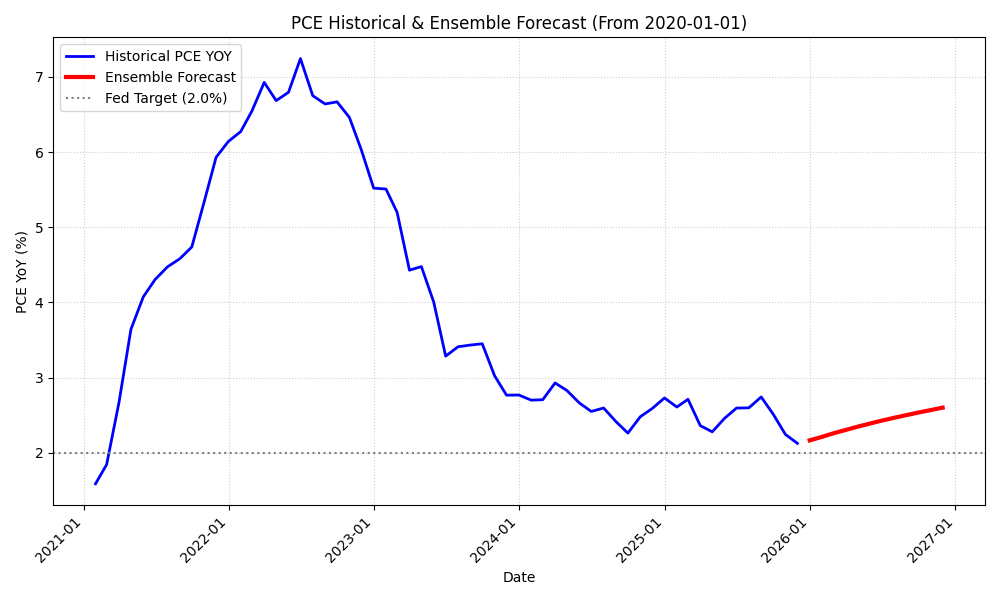

📈 최신 보고서 요약 (2025-11-14) [보고서 본문 보기]
PCE Historical 및 앙상블 예측 경로 (2020.01~)

* 전체 보고서에는 개별 모델(AR(1), XGBoost, LSTM) 경로가 모두 포함되어 있습니다.
월별 PCE YoY (실제 및 앙상블 추정치) 비교
| 기간 | PCE YoY (실제) | PCE YoY (앙상블 추정치) |
|---|---|---|
| 2024-12 | 2.73 | |
| 2025-01 | 2.61 | |
| 2025-02 | 2.71 | |
| 2025-03 | 2.36 | |
| 2025-04 | 2.28 | |
| 2025-05 | 2.46 | |
| 2025-06 | 2.59 | |
| 2025-07 | 2.6 | |
| 2025-08 | 2.74 | |
| 2025-09 | 2.51 | |
| 2025-10 | 2.24 | |
| 2025-11 | 2.12 | |
| 2025-12 | 2.16 | |
| 2026-01 | 2.21 | |
| 2026-02 | 2.26 | |
| 2026-03 | 2.3 | |
| 2026-04 | 2.35 | |
| 2026-05 | 2.39 | |
| 2026-06 | 2.43 | |
| 2026-07 | 2.46 | |
| 2026-08 | 2.5 | |
| 2026-09 | 2.53 | |
| 2026-10 | 2.57 | |
| 2026-11 | 2.6 |
* 이 표는 최근 12개월의 실제 PCE YoY 값과 향후 12개월의 앙상블 예측값을 월별로 보여줍니다.